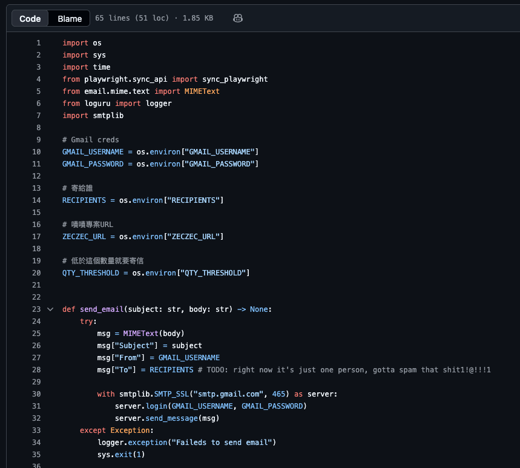

自動化 / 工具
技術選擇
由於平台頁面無法直接爬取，改以 Playwright 模擬真實瀏覽器行為——定時在背景開啟目標頁面，讀取頁面中的庫存數字，與設定閾值比對後觸發通知。對平台而言，這與一般使用者造訪頁面的行為相同，不涉及未授權的資料存取。
功能設計
以 Playwright 定時啟動 headless 瀏覽器，開啟專案頁面後讀取頁面中的剩餘數量文字，不依賴 API 或直接請求，行為與一般使用者相同。
設定庫存數量閾值，當偵測到剩餘數量低於設定值時自動觸發通知，避免人工盯盤的時間成本。
支援 Email 寄送提醒，並可設定推播至內部 Slack 頻道，確保相關人員即時收到庫存異動通知。
程式碼
